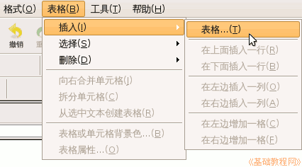
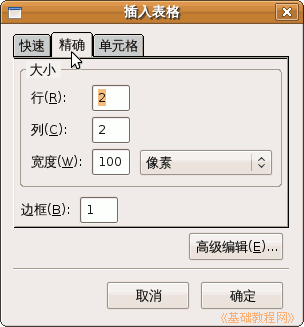
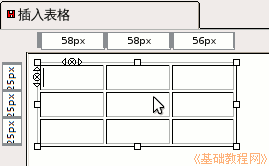
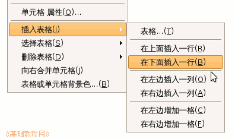

KompoZer操作基础教程
作者：Teliute 来源：基础教程网
九、插入表格 返回目录 下一课使用表格可以很方便地布置页面，表格里的每个小格叫单元格，里面可以放文字、图片等，下面我们来看一个练习；
1、启动KompoZer
1）点左上角菜单“应用程序－编程－KompoZer”，就可以启动KompoZer程序；
2）点菜单“格式－页面标题”，修改标题为“插入表格”，然后点菜单“文件－保存”命令，以“biaoge.html”保存到qqc文件夹中；
2、插入表格
1）点菜单“表格－插入－表格..”命令，出来一个对话框；

2）对话框里面有一个小表格，移动鼠标就可以选择不同的行列，
点上边的“精确”标签，可以通过输入数字来确定表格，

3）在里面输入3和3，宽度为200，点“确定”，出来一个3×3的表格，上面有每个单元格的宽度；

4）在表格里敲右键，会出来一个表格菜单，相应的有选择表格，删除表格，插入一行，插入一列等等；

5）试着在表格里面输入一些文字内容，操作一下里面的各个命令，然后保存一下文件；
本节学习了在KompoZer中插入表格的基本方法，如果你成功地完成了练习，请继续学习下一课内容；
本教程由86团学校TeliuTe制作|著作权所有
基础教程网：http://teliute.org/
美丽的校园……
转载和引用本站内容，请保留作者和本站链接。